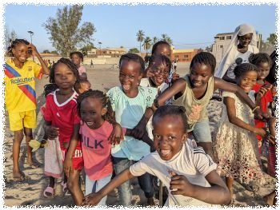

セネガル

| Facebookページへは各 |  |
から飛べます |
【セネガル1】今年の年末年始はカレンダーの並びが良いせいか航空券が高騰しており辛いのですが、目を瞑って西アフリカのセネガルへ向かいます。
水井 彰さんの投稿 2024年12月27日金曜日
【セネガル2】世界遺産の島サン=ルイに来ています。かつての仏領西アフリカの首都として植民地時代の街並みを今に伝える貴重な文化遺産という触れ込みですが、そんなことよりもここに暮らす人々がとにかく最高でした。
水井 彰さんの投稿 2024年12月29日日曜日
【セネガル3】岬のまちジョアルに来ています。ダカールやサン=ルイのような都市部とは異なる長閑な環境に身を置いて静かに年越ししようと思います。
水井 彰さんの投稿 2025年1月1日水曜日
【セネガル4】セネガルに数少ない観光地のうちのツートップとも言えるピンク湖ことラックローズと風光明媚なゴレ島を訪れて旅程を終えます。ハードで楽しく、かつ深い学びのある一週間でした。
水井 彰さんの投稿 2025年1月4日土曜日